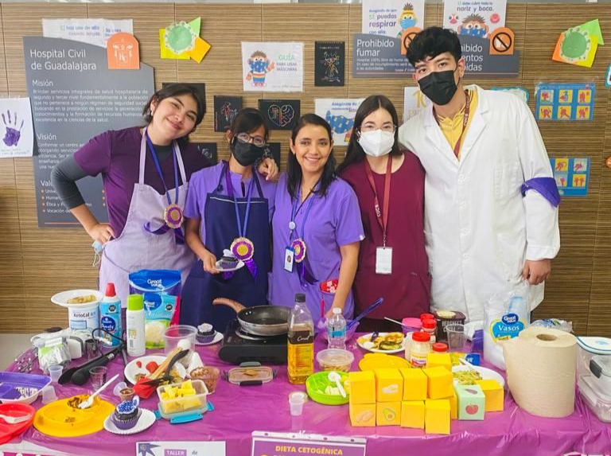
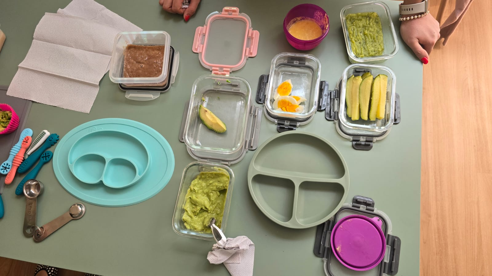
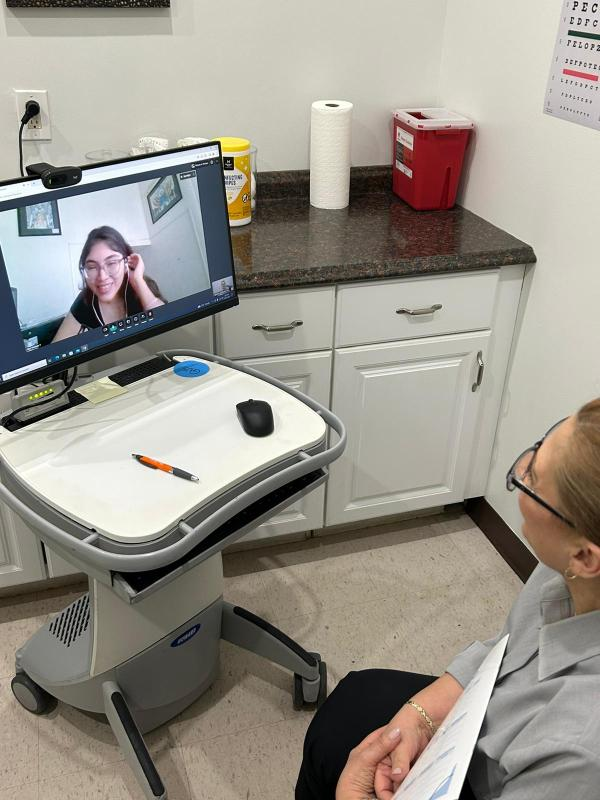
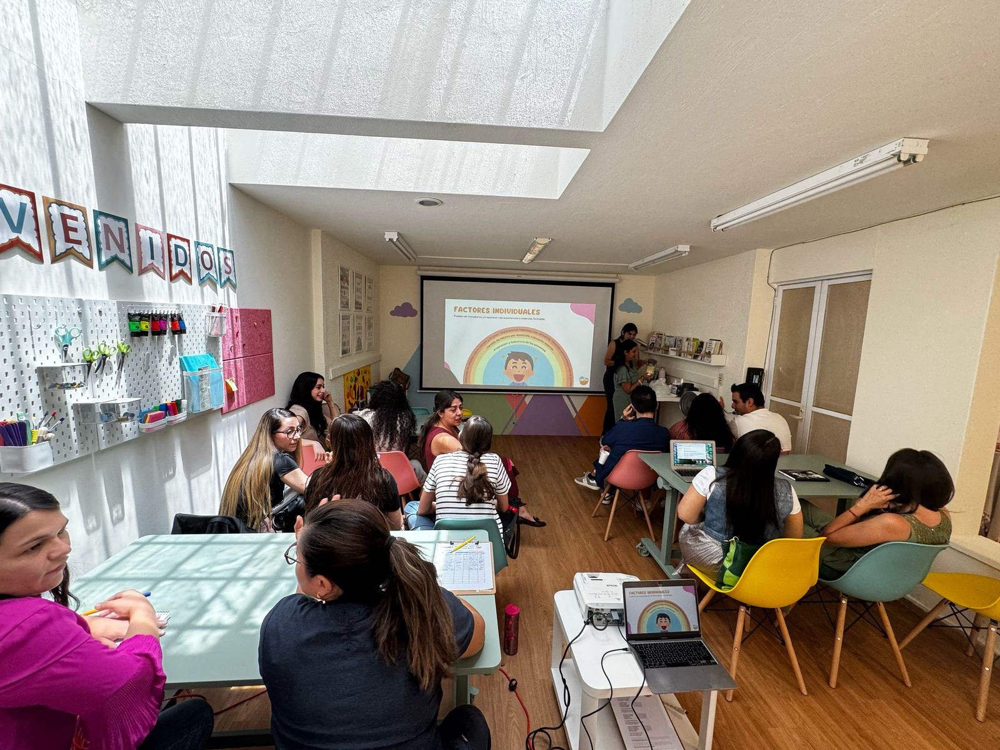

Alimentación consciente desde los primeros años, con respeto al ritmo de cada niño.
Estrategias basadas en medicina funcional para restaurar el equilibrio intestinal.
Herramientas prácticas y claras para vivir con diabetes sin miedo a la comida.
Cambios sostenibles, sin dietas restrictivas ni promesas vacías.

Soy licenciada en Nutrición y educadora en diabetes. Me encanta hablar de alimentación y que en cada sesión aprendas más de ti, para que puedas tomar decisiones conscientes sobre tu autocuidado.
Mi camino comenzó con la historia de mi hermana menor y su nutrición enteral en casa — desde entonces, la nutrición clínica y la empatía han caminado juntas en mi trabajo.
Conoce mi trayectoria completa
Acompañamiento nutricional para niñas y niños, incluyendo food chaining y selectividad alimentaria.

Planes personalizados para salud digestiva, control de peso, diabetes y bienestar general.

Talleres y sesiones educativas para grupos, escuelas y empresas sobre alimentación consciente.